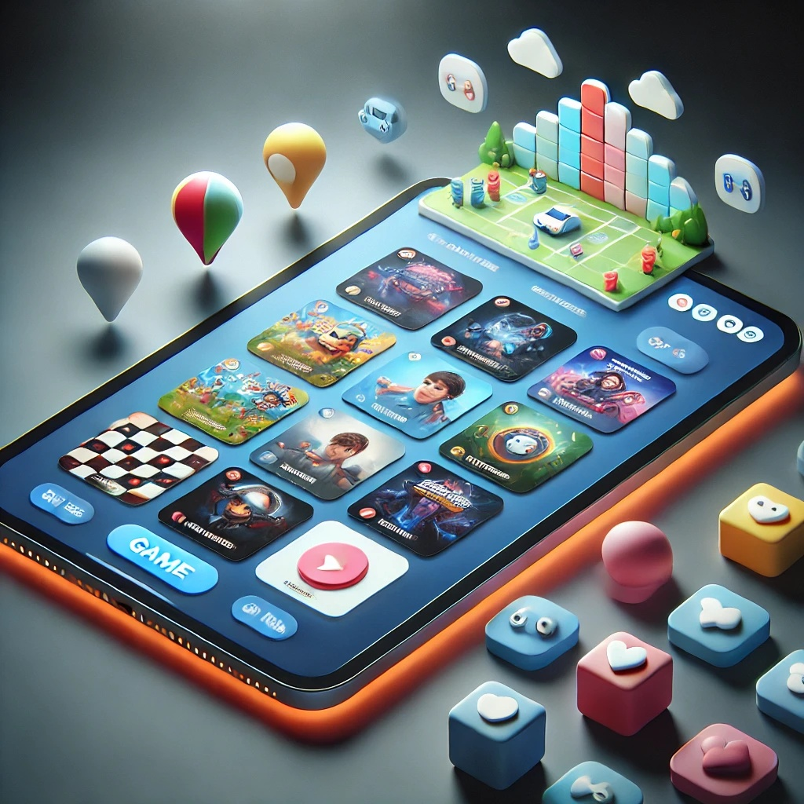
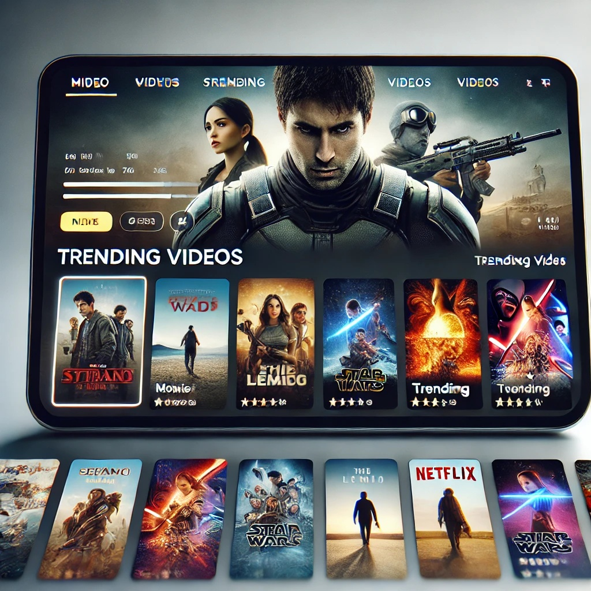
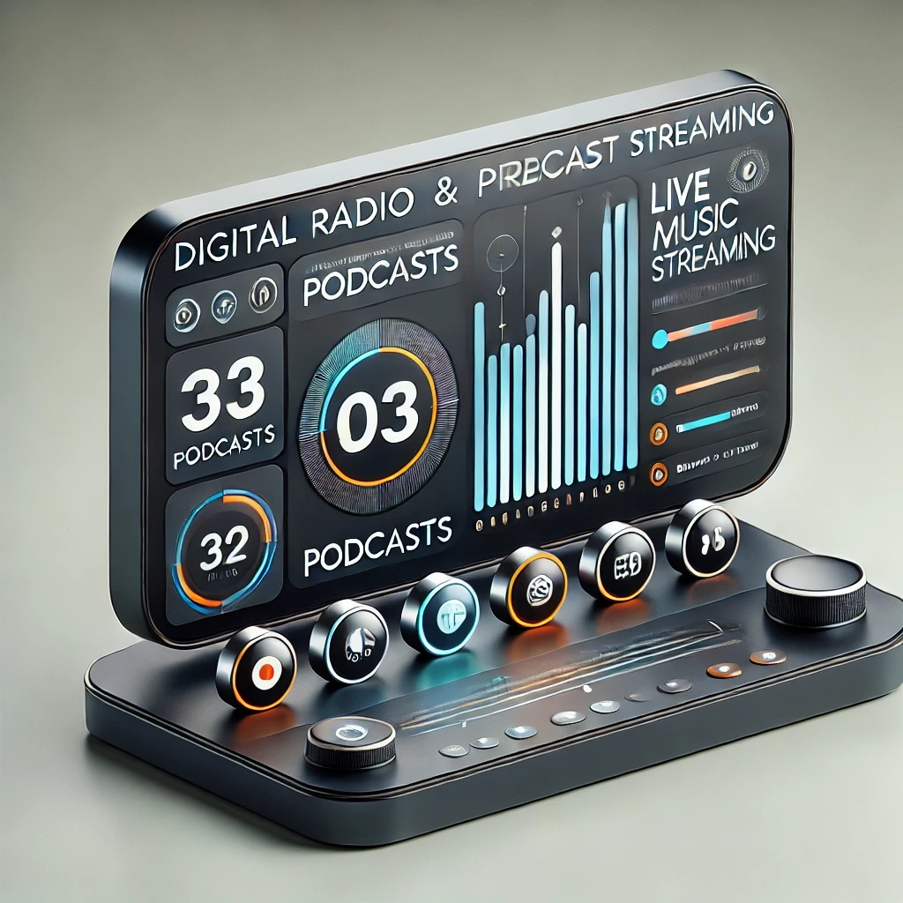

Productos destacados
-

TIC GameBox – Colección de Minijuegos
Sumérgete en el mundo del entretenimiento con TIC GameBox, una selección de minijuegos casuales diseñados para todas las edades. Disfruta de partidas rápidas de estrategia, arcade y rompecabezas sin necesidad de largas sesiones.
$100
-

TIC Play – Plataforma de Streaming
Disfruta de una amplia variedad de videos, cortometrajes y contenido exclusivo con TIC Play. Desde películas independientes hasta virales del momento, accede a un catálogo en constante actualización para disfrutar del mejor entretenimiento sin interrupciones.
$50
-

TIC Radio – Podcast & Música en Vivo
Conéctate a TIC Radio, la mejor plataforma para disfrutar de música en streaming y podcasts originales. Desde programas de tecnología y cultura hasta listas de reproducción personalizadas, TIC Radio es tu mejor compañero para cualquier momento del día.
$200
Acerca de nosotros
En TIC Servid, nos apasiona el entretenimiento digital y queremos ofrecerte una experiencia única y accesible. Somos una plataforma innovadora dedicada al ocio interactivo, donde encontrarás una gran variedad de contenido, desde juegos y streaming de videos, hasta podcasts y radio.
Nuestro objetivo es proporcionar un espacio donde puedas disfrutar del entretenimiento sin complicaciones, sin necesidad de invertir demasiado tiempo. Ya seas un amante de los videojuegos, un aficionado a los podcasts o alguien que busca música y videos para relajarse, en TIC Servid tenemos algo para ti.
Dirigimos nuestra propuesta a un público amplio, especialmente a jóvenes y adultos de 18 a 45 años, con un enfoque especial en los mercados de habla hispana. Creemos en la importancia de un entretenimiento ligero, accesible y de calidad, adaptado a las necesidades de quienes buscan momentos de desconexión en su día a día.
A medida que crecemos, exploramos nuevas formas de enriquecer nuestra plataforma, incluyendo contenido gratuito y opciones premium. Queremos que TIC Servid sea tu destino favorito para el ocio digital, combinando la diversión con la comodidad de una plataforma fácil de usar.
¡Únete a nuestra comunidad y descubre todo lo que tenemos para ofrecerte!